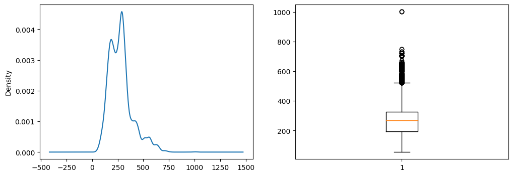

Data Mining#
Overview Tugas:
- Melakukan analisis metadata dengan data dari internet
Data Diri#
NAMA : MOHAMMAD HABIBUL AKHYAR
NIM : 220411100158
KELAS : PENAMBANGAN DATA E
Exploratory Data Analysis (EDA)#
import numpy as pd
import pandas as pd
import seaborn as sns
import matplotlib.pyplot as plt
%matplotlib inline
from google.colab import drive
drive.mount('/content/drive')
---------------------------------------------------------------------------
KeyboardInterrupt Traceback (most recent call last)
<ipython-input-2-d5df0069828e> in <cell line: 2>()
1 from google.colab import drive
----> 2 drive.mount('/content/drive')
/usr/local/lib/python3.10/dist-packages/google/colab/drive.py in mount(mountpoint, force_remount, timeout_ms, readonly)
98 def mount(mountpoint, force_remount=False, timeout_ms=120000, readonly=False):
99 """Mount your Google Drive at the specified mountpoint path."""
--> 100 return _mount(
101 mountpoint,
102 force_remount=force_remount,
/usr/local/lib/python3.10/dist-packages/google/colab/drive.py in _mount(mountpoint, force_remount, timeout_ms, ephemeral, readonly)
131 )
132 if ephemeral:
--> 133 _message.blocking_request(
134 'request_auth', request={'authType': 'dfs_ephemeral'}, timeout_sec=None
135 )
/usr/local/lib/python3.10/dist-packages/google/colab/_message.py in blocking_request(request_type, request, timeout_sec, parent)
174 request_type, request, parent=parent, expect_reply=True
175 )
--> 176 return read_reply_from_input(request_id, timeout_sec)
/usr/local/lib/python3.10/dist-packages/google/colab/_message.py in read_reply_from_input(message_id, timeout_sec)
94 reply = _read_next_input_message()
95 if reply == _NOT_READY or not isinstance(reply, dict):
---> 96 time.sleep(0.025)
97 continue
98 if (
KeyboardInterrupt:
%cd /content/drive/MyDrive/data-mining/tugas1
/content/drive/MyDrive/data-mining/tugas1
df = pd.read_csv("data_car.csv")
df.head()
| Make | Model | Year | Engine Fuel Type | Engine HP | Engine Cylinders | Transmission Type | Driven_Wheels | Number of Doors | Market Category | Vehicle Size | Vehicle Style | highway MPG | city mpg | Popularity | MSRP | |
|---|---|---|---|---|---|---|---|---|---|---|---|---|---|---|---|---|
| 0 | BMW | 1 Series M | 2011 | premium unleaded (required) | 335.0 | 6.0 | MANUAL | rear wheel drive | 2.0 | Factory Tuner,Luxury,High-Performance | Compact | Coupe | 26 | 19 | 3916 | 46135 |
| 1 | BMW | 1 Series | 2011 | premium unleaded (required) | 300.0 | 6.0 | MANUAL | rear wheel drive | 2.0 | Luxury,Performance | Compact | Convertible | 28 | 19 | 3916 | 40650 |
| 2 | BMW | 1 Series | 2011 | premium unleaded (required) | 300.0 | 6.0 | MANUAL | rear wheel drive | 2.0 | Luxury,High-Performance | Compact | Coupe | 28 | 20 | 3916 | 36350 |
| 3 | BMW | 1 Series | 2011 | premium unleaded (required) | 230.0 | 6.0 | MANUAL | rear wheel drive | 2.0 | Luxury,Performance | Compact | Coupe | 28 | 18 | 3916 | 29450 |
| 4 | BMW | 1 Series | 2011 | premium unleaded (required) | 230.0 | 6.0 | MANUAL | rear wheel drive | 2.0 | Luxury | Compact | Convertible | 28 | 18 | 3916 | 34500 |
Metadata#
print(f"""
Atribut: {df.shape[1]}
Label: {df.columns[0]}
Class: {df['Make'].unique()}
Data: {df.shape[0]}
""")
Atribut: 16
Label: Make
Class: ['BMW' 'Audi' 'FIAT' 'Mercedes-Benz' 'Chrysler' 'Nissan' 'Volvo' 'Mazda'
'Mitsubishi' 'Ferrari' 'Alfa Romeo' 'Toyota' 'McLaren' 'Maybach'
'Pontiac' 'Porsche' 'Saab' 'GMC' 'Hyundai' 'Plymouth' 'Honda'
'Oldsmobile' 'Suzuki' 'Ford' 'Cadillac' 'Kia' 'Bentley' 'Chevrolet'
'Dodge' 'Lamborghini' 'Lincoln' 'Subaru' 'Volkswagen' 'Spyker' 'Buick'
'Acura' 'Rolls-Royce' 'Maserati' 'Lexus' 'Aston Martin' 'Land Rover'
'Lotus' 'Infiniti' 'Scion' 'Genesis' 'HUMMER' 'Tesla' 'Bugatti']
Data: 11914
Menghapus duplikat baris#
df.shape
(11914, 16)
duplikat_baris = df[df.duplicated()]
print("Nomor duplikat baris = ", duplikat_baris.shape)
Nomor duplikat baris = (715, 16)
df.count()
Make 11914
Model 11914
Year 11914
Engine Fuel Type 11911
Engine HP 11845
Engine Cylinders 11884
Transmission Type 11914
Driven_Wheels 11914
Number of Doors 11908
Market Category 8172
Vehicle Size 11914
Vehicle Style 11914
highway MPG 11914
city mpg 11914
Popularity 11914
MSRP 11914
dtype: int64
df = df.drop_duplicates()
df.head()
| Make | Model | Year | Engine Fuel Type | Engine HP | Engine Cylinders | Transmission Type | Driven_Wheels | Number of Doors | Market Category | Vehicle Size | Vehicle Style | highway MPG | city mpg | Popularity | MSRP | |
|---|---|---|---|---|---|---|---|---|---|---|---|---|---|---|---|---|
| 0 | BMW | 1 Series M | 2011 | premium unleaded (required) | 335.0 | 6.0 | MANUAL | rear wheel drive | 2.0 | Factory Tuner,Luxury,High-Performance | Compact | Coupe | 26 | 19 | 3916 | 46135 |
| 1 | BMW | 1 Series | 2011 | premium unleaded (required) | 300.0 | 6.0 | MANUAL | rear wheel drive | 2.0 | Luxury,Performance | Compact | Convertible | 28 | 19 | 3916 | 40650 |
| 2 | BMW | 1 Series | 2011 | premium unleaded (required) | 300.0 | 6.0 | MANUAL | rear wheel drive | 2.0 | Luxury,High-Performance | Compact | Coupe | 28 | 20 | 3916 | 36350 |
| 3 | BMW | 1 Series | 2011 | premium unleaded (required) | 230.0 | 6.0 | MANUAL | rear wheel drive | 2.0 | Luxury,Performance | Compact | Coupe | 28 | 18 | 3916 | 29450 |
| 4 | BMW | 1 Series | 2011 | premium unleaded (required) | 230.0 | 6.0 | MANUAL | rear wheel drive | 2.0 | Luxury | Compact | Convertible | 28 | 18 | 3916 | 34500 |
Menhapus missing values#
print(df.isnull().sum())
Make 0
Model 0
Year 0
Engine Fuel Type 3
Engine HP 69
Engine Cylinders 30
Transmission Type 0
Driven_Wheels 0
Number of Doors 6
Market Category 3376
Vehicle Size 0
Vehicle Style 0
highway MPG 0
city mpg 0
Popularity 0
MSRP 0
dtype: int64
df = df.dropna()
print(df.isnull().sum())
Make 0
Model 0
Year 0
Engine Fuel Type 0
Engine HP 0
Engine Cylinders 0
Transmission Type 0
Driven_Wheels 0
Number of Doors 0
Market Category 0
Vehicle Size 0
Vehicle Style 0
highway MPG 0
city mpg 0
Popularity 0
MSRP 0
dtype: int64
Mendeteksi Nilai Outliers#
f = plt.figure(figsize=(12, 4))
f.add_subplot(1, 2, 1)
df["Engine HP"].plot(kind = "kde")
f.add_subplot(1, 2, 2)
plt.boxplot(df["Engine HP"])
plt.show()

sns.boxplot(x = df["Engine HP"])
<Axes: xlabel='Engine HP'>
Menangani nilai outlier pada kolom Engine HP#
from sklearn.preprocessing import MinMaxScaler
scaler = MinMaxScaler()
scaled = scaler.fit_transform(df[["Engine HP"]])
print(scaled)
[[0.29598309]
[0.2589852 ]
[0.2589852 ]
...
[0.2589852 ]
[0.2589852 ]
[0.17547569]]
scaled = pd.DataFrame(scaled, columns = ["Engine HP"])
scaled.head()
| Engine HP | |
|---|---|
| 0 | 0.295983 |
| 1 | 0.258985 |
| 2 | 0.258985 |
| 3 | 0.184989 |
| 4 | 0.184989 |
sns.boxplot(x = scaled["Engine HP"])
<Axes: xlabel='Engine HP'>